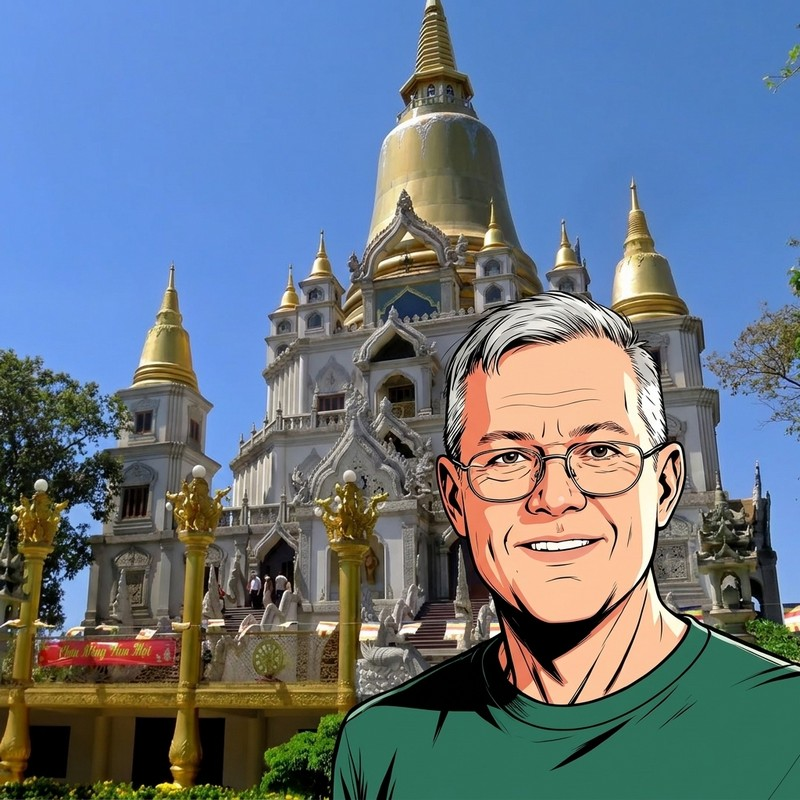
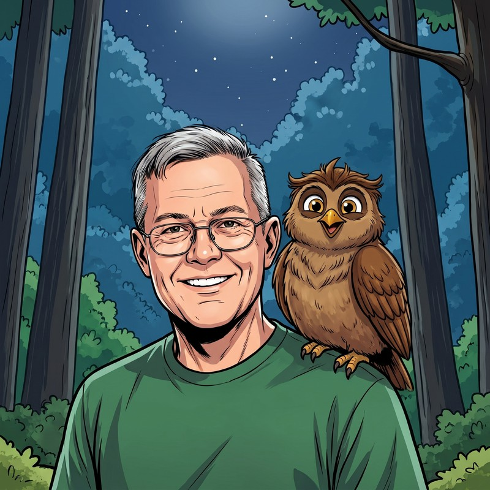
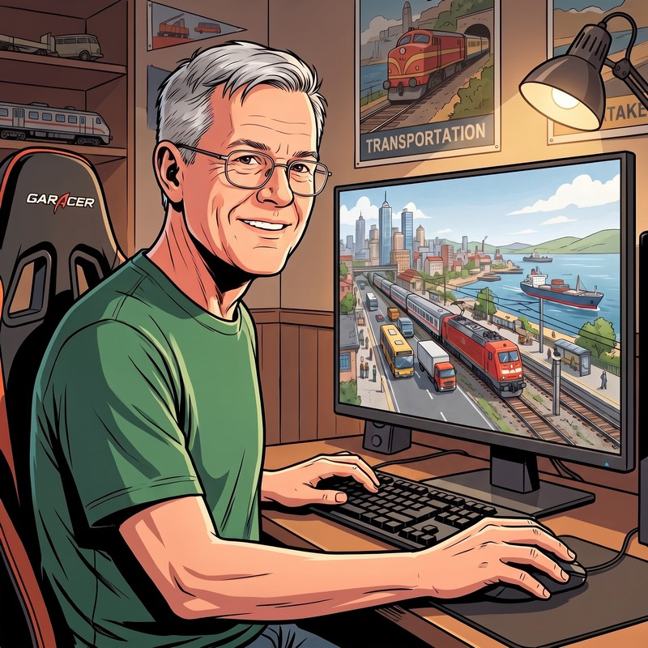

One year. Taking stock.
Marking the first anniversary of heribert-berlin.de
August 8, 2026
Dear readers,
One year ago today, on August 8, 2025, I got started. No publisher, no team, no experience with everything that was about to come my way. Just the intention of getting my stories out of the drawer.
What twelve months have turned into:
- 13 books and 20 e-books
- 770 photos on Facebook
- 145 videos of my own, most of them with subtitles in 13 languages
- my own homepage, built from scratch
- music tracks, transcripts, digitally narrated editions
Numbers are handy because they can be written down. But they only tell half the story.
They say nothing about the several thousand images I generated so that the few hundred usable ones would remain. Nothing about the week I spent on a script until it finally ran without errors. Nothing about the German subtitles that I still place into the timeline by hand, because no program gets the rhythm of speech right. And nothing about bookkeeping and the tax office, which claim their place even when you would rather be writing.
They also say nothing about what comes before every book and every video: schedules, editorial calendars, analyses of what worked when on which platform, and a dossier for every character, so that nothing gets mixed up across hundreds of pages.
That is the honest balance: the visible part is the smaller one.
I am an intuitive applications technician. I prefer solving problems to talking about them at length. This year consisted mostly of solving problems. Some went quickly, some did not, some only on the fifth attempt.
What carried me through was you. Every comment under a video, every response to a book, every message from someone who has taken Kim Collins or Waldemar to heart. I answer every comment, and I don't mean that as a marketing rule, but because I am genuinely interested in who is reading.
The three YouTube channels
One channel became three
I started with one YouTube channel. By now there are three, each with its own face:

Travel Videos, Audiobooks, Info
www.youtube.com/@heri_berlinThe main channel. Here you will find the videos of my 2018/19 journey through Southeast Asia, the free audiobook of "One Last Cà phê" and everything around my books.

Heri's Kids' Channel
www.youtube.com/@heribertskinderkanalThe channel for the little ones: Waldemar the Owl and the animals of the forest, with a video for every volume of the children's book series.

Heribert's Transport Fever
www.youtube.com/@HeribertsTransportFeverThe newcomer. The Transport Fever videos that used to run on the main channel now have a home of their own, with a new video every Monday. Once Transport Fever 3 is released, I will also tell stories with the game there.
Authors helping authors
"Reading Tips"
Since July, my homepage has a section called "Reading Tips". There I introduce fellow authors whose books deserve more attention. Stefan Röser made the start with his historical novels, and he introduces me on his site in return. Then came David C. Lerner with science fiction about artificial intelligence and consciousness, and Perry Payne, who lives in Paraguay and has written around 30 books.
And because recommending without reading is worthless, there is now also a review page. No stars, no grades, just what stayed with me while reading.
We all do this without a publisher behind us. So we help each other, it's that simple.
An anniversary gift: the game room
Game room:
For the first anniversary I have a thank-you for you that exists nowhere else: my game room. It cannot be reached from the homepage and does not appear in any search engine. Only you as newsletter readers have access.
It opens with three games, all built by myself:
Memory "World Landmarks", for adults and older children: 101 famous buildings from all over the world. The cards lie overlapping on the table and every one of them can be clicked. Five levels, the highest with 100 cards, and you can play it with two players.
Waldemar Memory, for children: 20 animals of the forest. A pair consists of the real animal and its cartoon character, and the animal's name appears when you find a match. This memory can also be played by two, and children who cannot read yet can have the instructions read aloud by Simon, the narrator of my children's audiobooks.
Solitaire, the card classic: Klondike for a quiet round in between, with instructions in three languages, a hint button and auto-play.
A word to parents: The two memory games have a built-in time brake. After one hour comes a friendly reminder, after 70 minutes a break, after three hours the game closes for 30 minutes. Only adults can switch this off. No account, no ads, no costs, nothing is downloaded and nothing is collected.
The game room will grow. Loyal readers can look forward to something new here again and again.
One request to close
If you enjoy this newsletter, feel free to forward it to friends and family. Anyone can sign up on the sign-up page.
Where things go from here: The writing continues. The second novel is being written, the Waldemar series goes on, and my memoirs in four volumes are in the pipeline. Pakistan has been told, but you will be seeing more of it for a while yet.
Thank you for walking this first year with me.
Warmly
Heribert Lange